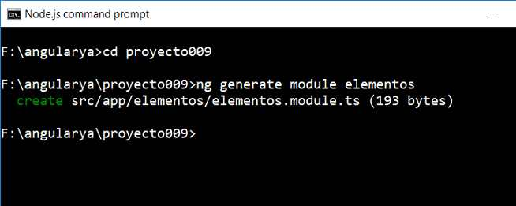
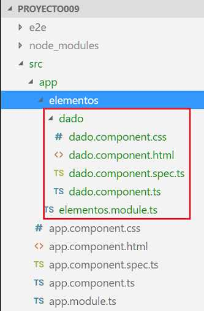
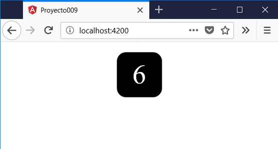

14 - Módulos: creación y consumo
Los módulos nos permiten organizar una aplicación compleja en Angular.
Cuando creamos una aplicación con Angular CLI se crea en forma automática el módulo 'AppModule' en el archivo 'app.module.ts'.
Un módulo tiene por objetivo agrupar un conjunto de componentes relacionadas entre si.
Vamos a ver los pasos para crear un módulo en Angular, agregar una componente en dicho módulo y finalmente consumir dicha componente accediendo a la misma desde otro módulo de la aplicación.
Problema
Crear un módulo llamado 'elementos' y luego dentro del mismo almacenar una componente llamada 'dado'. Consumir la clase 'dado' desde el módulo principal de la aplicación.

-
Desde la línea de comandos de Node.js procedemos a crear el proyecto:
f:\angularya> ng new proyecto009
-
Primero descendemos a la carpeta proyecto009 y nuevamente desde la línea de comandos procedemos a crear el módulo 'elementos' escribiendo:
f:\angularya\proyecto009> ng generate module elementos
Al ejecutar este comando se crea una carpeta llamada 'elementos' dentro de la carpeta 'app' y además un archivo llamado 'elementos.module.ts'.

Se crea el archivo 'elementos.module.ts':
import { NgModule } from '@angular/core'; import { CommonModule } from '@angular/common'; @NgModule({ imports: [ CommonModule ], declarations: [] }) export class ElementosModule { } -
En nuestro tercer paso vamos a crear la componente dado almacenando la misma en el módulo elementos (no en el módulo principal):
f:\angularya\proyecto009> ng generate component elementos/dado
Como ya sabemos con este comando se crean los cuatro archivos de la componente y se modifica el archivo 'elementos.module.ts', es importante anteceder al nombre de la componente el módulo donde se debe registrar:

Si abrimos nuevamente el archivo 'elementos.module.ts' podemos ver que la componente 'DadoComponent' se encuentra registrada:
import { NgModule } from '@angular/core'; import { CommonModule } from '@angular/common'; import { DadoComponent } from './dado/dado.component'; @NgModule({ imports: [ CommonModule ], declarations: [DadoComponent] }) export class ElementosModule { }Codificamos los archivos de la componente 'dado' como hemos visto en conceptos anteriores de este curso.
dado.component.ts
import { Component, OnInit, Input } from '@angular/core'; @Component({ selector: 'app-dado', templateUrl: './dado.component.html', styleUrls: ['./dado.component.css'] }) export class DadoComponent implements OnInit { @Input() valor: number=1; constructor() { } ngOnInit() { } }dado.component.html
<div class="forma"> {{valor}} </div>dado.component.css
.forma { width: 5rem; height: 5rem; font-size: 3rem; color:white; background-color: black; border-radius: 1rem; display: inline-flex; justify-content: center; align-items: center; margin:10px; } -
El siguiente paso fundamental para que otros módulos pueden consumir la componente 'dado' es modificar el archivo 'elementos.module.ts' exportando la componente que acabamos de crear:
import { NgModule } from '@angular/core'; import { CommonModule } from '@angular/common'; import { DadoComponent } from './dado/dado.component'; @NgModule({ imports: [ CommonModule ], exports: [DadoComponent], declarations: [DadoComponent] }) export class ElementosModule { } -
Ahora abrimos y modificamos el módulo que la va a importar para poder consumirla:
import { BrowserModule } from '@angular/platform-browser'; import { NgModule } from '@angular/core'; import { AppComponent } from './app.component'; import { ElementosModule } from './elementos/elementos.module' @NgModule({ declarations: [ AppComponent ], imports: [ BrowserModule, ElementosModule ], providers: [], bootstrap: [AppComponent] }) export class AppModule { } -
Finamente en el archivo 'app.component.html podemos utilizar la clase 'dado' que se encuentra en otro módulo:
<div style="text-align:center"> <app-dado [valor]="6"></app-dado> </div>
Toda esta complejidad de agrupar componentes en distintos módulos tiene sentido si la aplicación es compleja.
Si ejecutamos ahora el proyecto:
ng server -o
Podemos ver que tenemos:
